Google Merchant Centerに追加された6つの会話属性を整理。手入力ではなく商品マスタからAIで変換生成する流れと、生成AIの開示が必要な範囲をまとめた。
ナフサ不足が梱包資材・物流コスト・仕入れ原価に与える影響を3軸で整理。EC担当者が取るべき対策もまとめた。
Search Console登録・titleタグ改善・1記事執筆の無料3施策と、リース契約・順位保証・成果報酬型SEOの罠を整理した。
LLMOの定義、GEO・AIO・AEOとの違い、SEOとの関係、小規模事業者が無料で始められるLLMO対策の基本を整理した。
インデックス登録、検索パフォーマンス確認、構造化データ検証など初心者がやるべき機能に絞ったSearch Consoleの使い方解説。
FAQPage・Article・BreadcrumbListのJSON-LDコード例と実装後のリッチリザルトテスト確認方法を解説した。
Googleは2026年5月にllms.txtを不要と公式表明。SEO専門家の反応は賛否両論。ChatGPT・Claude・Perplexity向けには依然有効で、専門家の声と実体験から設置判断の基準を整理した。
SEO対策の費用相場、LLMO・GEO・AIO対策の料金比較、月額10万円以下の低価格サービス、無料でできる構造化データ・llms.txt施策を予算別に整理した。
note・WordPress・GitHub Pagesを費用・収益化・カスタマイズ性・AI検索（LLMO）対応の4軸で比較した記事。
Amazon・楽天・Yahoo!のAI画像ルールと景品表示法の優良誤認リスクを整理。モール別のセーフ・NGラインを比較した。
クラウドワークス・ランサーズの不満を発注側・受注側の両方から調査。低単価・手数料・AIスロップ問題をXや掲示板から整理した。
商品登録・バナー制作・SNS運用・EC店長代行など7業務の単価相場をクラウドソーシングの実案件から整理。手数料控除後の月収試算も。
EC担当の転職で評価される資格と副業・独立に必要な資格を立場別に整理。Google・Amazon公式認定からウェブ解析士・ITパスポート・簿記まで網羅した。
色補正・肌レタッチ・切り抜き・合成など作業内容別の相場と、16社のサービス料金を1ページに集約。外注先を探している方の比較用に。
専門業者・クラウドソーシング・フリーランスの3タイプを比較。料金帯・品質・納期の違いと、依頼前に準備しておくことを整理した。
EC商品画像の白抜き・カラバリ作成からジュエリーの質感表現まで。7社を比較。
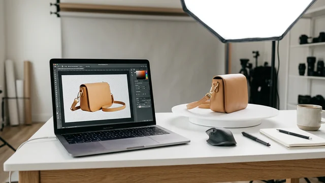
背景切り抜きを個人・法人で依頼する場合の費用相場をまとめた。1枚19円〜の切り抜き専門サービスから、レタッチ込みの業者まで11社を比較。
飲食店メニュー写真やEC食品画像をプロの手でおいしそうに仕上げたい方向け。7社を比較。
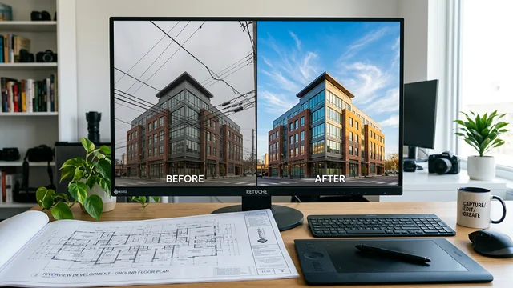
電線除去・青空合成・歪み補正など。6社を比較。
ささげ代行の費用相場を撮影・採寸・原稿の工程別に整理。1商品あたりの料金目安と依頼先タイプ別の特徴。
急ぎのレタッチ外注先を遺影・就活・EC・雑誌の場面別に整理。24時間電話対応のnocos、24時間3交代の切り抜きjp、約50名体制の東京レタッチなどを紹介した。
EC商品撮影が追いつかない原因と、内製で効率化する段取り、撮影だけを外注に切り出す判断基準を整理した。
ささげ業務（撮影・採寸・原稿）の工数を工程別に計算。採寸15分×20商品で丸1日が消える業務量を整理した。
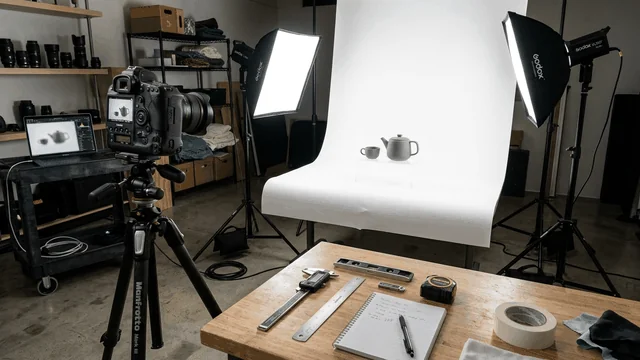
ささげ担当の仕事内容と必要スキルをまとめた。離職率の背景を厚労省データと現場の声で整理した。
ささげ外注の往復送料と機会損失を比較。商材別の損益分岐点と内製＋外注のハイブリッド運用を整理した。
EC担当のツバサが景品表示法の社内研修で学んだ実務上の注意点を備忘録にまとめた。No.1表示・二重価格・ステマ規制の要点と外注先選定の話。
写真加工屋さんと切り抜きjpを料金・オプション・発注条件で比較。2026年4月の価格改定後の最新データで整理。
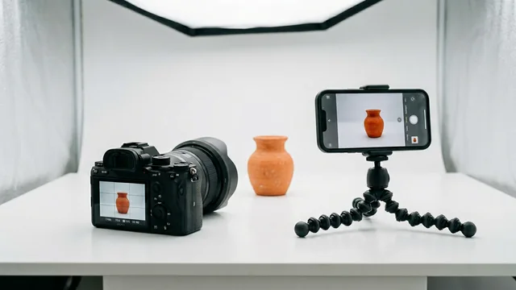
EC商品撮影にミラーレスとスマホのどちらを使うべきかを、画質・コスト・撮影後のワークフローまで含めて比較。
外注先への見積もり依頼で予算を伝えるコツを解説。ウェブ制作・画像加工・デザイン・撮影代行などECの外注すべてに使える。
仕事が止まっている原因は相手ではなく自分の手元にあった。上司に指摘されて気づいた「ボールの持ちすぎ」問題と対処法。
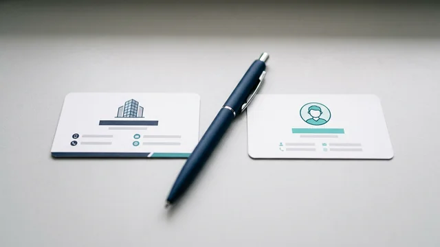
EC業務の外注先を専門会社とフリーランスで比較。品質・コスト・税務・ディレクション工数の4軸で整理。
こだわりの1枚を人物レタッチしてもらうならどちらがいいか。サンプル画像の仕上がり・修正対応・運営体制の違いを整理した。
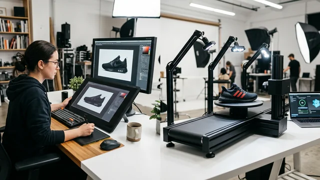
ささげ代行のflestonとPhotonXを、人力型とシステム型という事業の立て付けで比較。PANAMAの移管経緯と老舗フォートン（foton inc.）との区別も整理。
ささげ業務（撮影・採寸・原稿作成）の代行会社16社をタイプ別に比較。アパレル特化・物流一体型・定額制・リモート撮影など特徴と料金目安を整理。
GitHubもHTMLも知らなかった非エンジニアが、AIに聞きながらGitHub Pagesでブログサイトを構築した記録。SEO・LLMO設計もAIを活用。
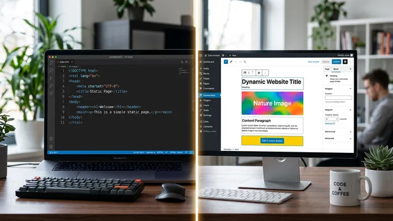
GitHub Pagesで60本以上の記事を運営した経験をもとに、静的サイトの弱点をAIツールでどう解消したかを記録。
用語集66ページへの自動リンク、関連記事セクション、パンくずリスト設計など、個人ブログで実際にやった内部リンク設計の記録。
外部リンクのnofollow・dofollow・sponsored・ugcの違いと、比較記事やアフィリエイトでの使い分けを整理した備忘録。
白黒写真のカラー化、写真の一部だけ色を変える、色褪せた写真の復元の3用途別に、無料で使える6つのアプリ・Webサービスを比較。
複業クラウド・lotsful・Offers・Workshipなど主要7社を対象職種・稼働形態・向き不向きで比較。クラウドソーシングとの違いも整理。
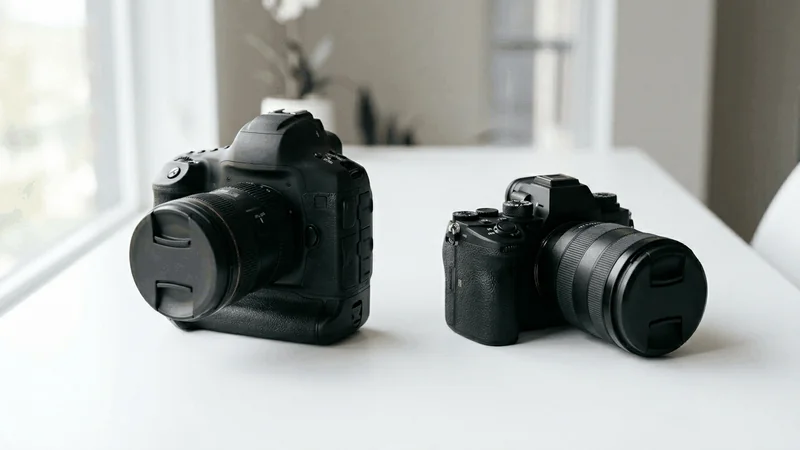
業務用ミラーレスは12〜18万円が下限。EOS R50・α6400・Z50IIを比較し、稟議を通す論理構成を整理。
ビジネスやSNSで使えるプロフィール写真の撮影サービスを7社比較。スタジオ・出張・マッチング型の3タイプで整理。
出張撮影の料金相場を用途別に整理。家族写真1〜3万円、七五三2〜5万円。主要5社の特徴も比較。
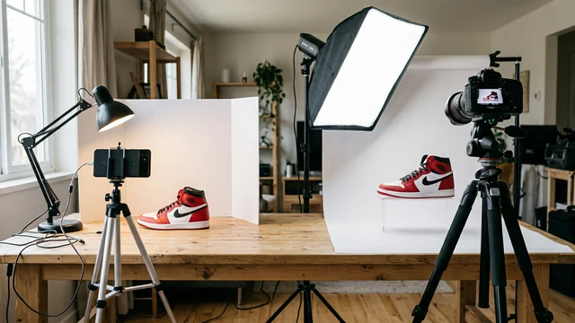
EC商品撮影を自分でやるか外注するかの判断基準を整理。月10商品以内なら自社、20以上なら外注が現実的。
ネット注文できる写真プリントサービス7社を比較。L判1枚7円〜の銀塩プリント。コンビニとの違いも整理。
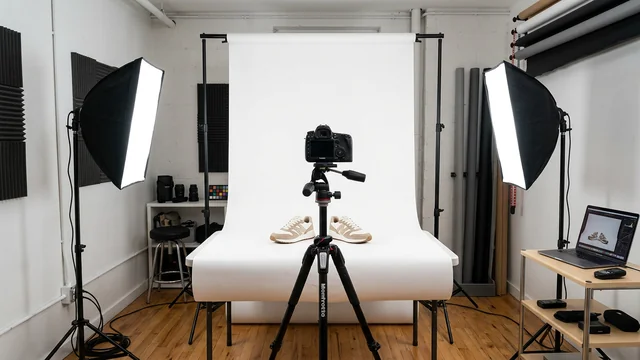
EC商品撮影向けレンタルスタジオの選び方を解説。白ホリ1時間2,500円〜の都内おすすめ7選。
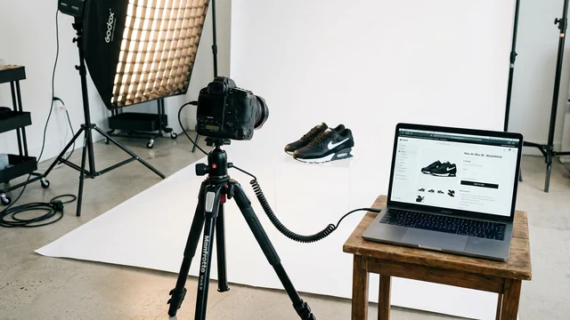
EC向け商品撮影の代行サービス7社を料金・納期・対応ジャンルで比較。郵送撮影なら1カット400円台から依頼できる。
Amazon・楽天市場・Yahoo!ショッピングの出店費用と手数料を比較表で整理。それぞれの特徴と向いている事業者を解説。
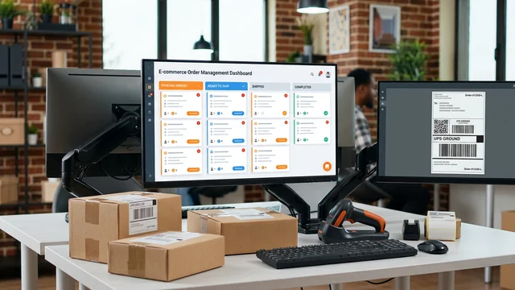
ネクストエンジン、GoQSystem、助ネコなどEC向け受注管理ツール7選を比較。小規模EC担当者の目線で整理。
EC運営の主要業務を外注向き・内製向きに分類。それぞれのコスト目安と判断基準を整理。
PIXTAがAI生成コンテンツの取り扱い停止を発表。各社の対応比較とプラットフォーム依存リスクを整理。
手持ちの写真から遺影を急ぎで作りたい場合と、生前に撮影して準備しておきたい場合。2つのパターンで依頼先を比較しました。
EC事業者向けに、商品画像の加工を1枚から依頼できる外注サービス5社を比較。切り抜き特化型とクラウドソーシング型に分けて整理しています。
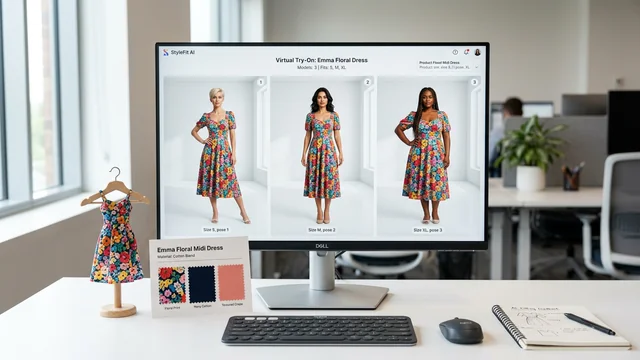
EC商品のモデル着用画像をAIで作れるサービスを11社調査。ツール型6社・制作代行型5社の料金構造と、生身モデル撮影との違いを比較。
llms.txtの仕様・書き方・設置手順・robots.txtとの違い・効果確認の方法をまとめた備忘録。
Googleフォト・iCloud・Amazon Photosの無料容量・月額料金・自動バックアップの使い勝手を比較。
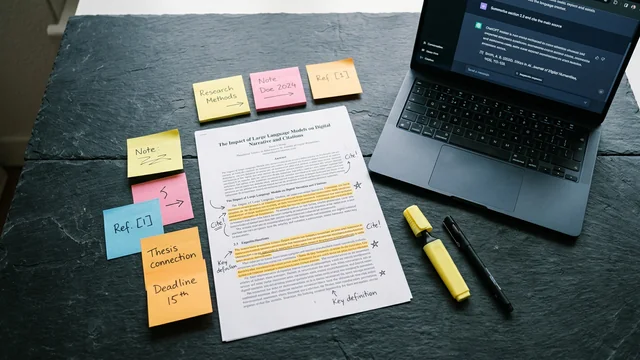
LLMOとSEOの違い・AIに引用されやすい記事構造・FAQ構造化データとllms.txtの効果を調べた備忘録。
iPhoneはUSBケーブル・AirDrop・iCloud経由、AndroidはUSBケーブル・Googleフォト経由の手順を解説。
Googleフォトへのクラウド移行・PCへの転送・重複写真の整理ツールなどをiPhone・Android別に解説。
noteはAdSense非対応・Amazon Associates制限あり。GitHub Pagesなら自由にHTMLを書けて収益化できる。
AdSense申請から審査通過までの手順・注意点をまとめた体験記。
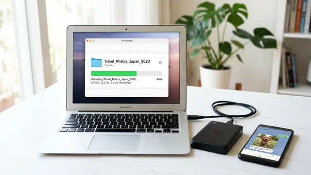
ギガファイル便・Googleドライブ・WeTransfer・LINE・AirDropの違いと使い分けを解説。
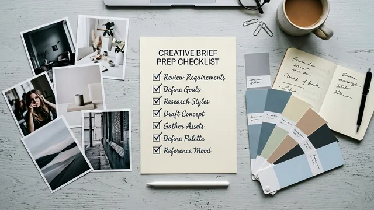
レタッチ外注で「思ってたのと違う」を防ぐための依頼のコツ。準備する5つの情報、具体的な伝え方、テスト依頼の活用法、修正フィードバックの出し方をまとめた。
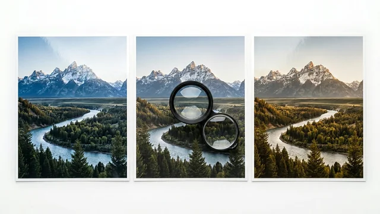
コンビニプリント・しまうまプリント・富士フイルム・カメラのキタムラの料金・画質・利便性を比較。
副業収入20万円超で確定申告が必要。経費にできるもの（カメラ・レンズ・Lightroom等）と住民税バレ防止策。
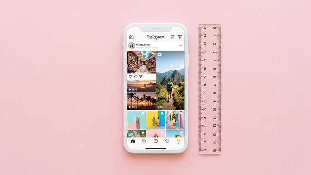
投稿タイプ別に最適な画像サイズ・アスペクト比を表でまとめた記事。
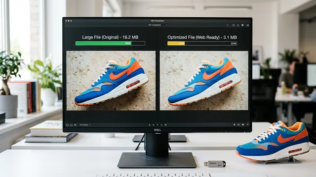
TinyPNG・Squoosh・Lightroomなどツール別の特徴、Amazon・楽天の推奨ファイルサイズ、圧縮しすぎで画質が落ちないコツを解説。
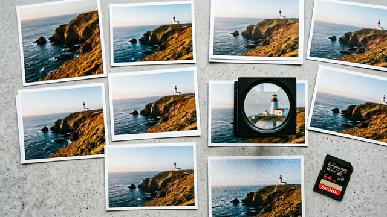
画像ファイル形式の違いをJPEG・PNG・WebP・GIF・RAWで整理。ECサイト・SNS・カメラ撮影での使い分けを比較表で解説。
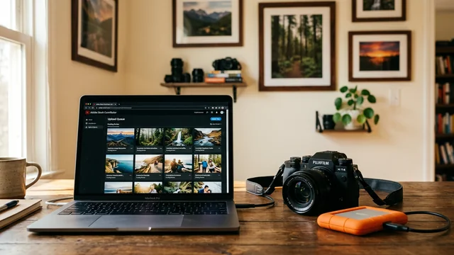
PIXTA・Shutterstock・Adobe Stockへの登録方法、売れやすいジャンル、月5,000円を目指すロードマップ。
AIレタッチアプリの得意・不得意を整理。Photoshop 2026のAI機能は最強だが進化が早すぎて追いかけきれない。外注して本業に集中する方が合理的。
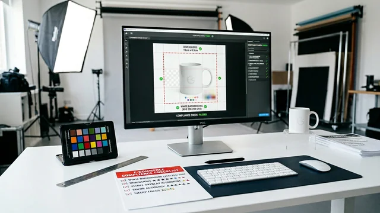
楽天市場の商品画像ルール（テキスト占有率20%制限等）とAmazon・メルカリとの違いを整理。
実家暮らし×週1リモートの20代会社員が、自宅・図書館・カフェを経てコワーキングスペースにたどり着くまでの記録。
AI画像生成ツール「Nano Banana」でニキビを消してみた実験記録。AIとレタッチの仕組みの違い、画質の限界も正直にレポート。
センサーサイズ・レンズ・ISO感度・F値が画質に与える影響を解説。
他人の写真をSNSで無断使用するリスク、街中撮影のNG例、商品画像への人物起用の注意点を整理。
Exifに含まれる情報、SNSごとの自動削除状況、iPhone/Android/PC別の削除手順をまとめました。
Remove.bg、Canva、iPhoneの標準機能、Photoshopなど背景白抜きの方法を費用別に比較しました。
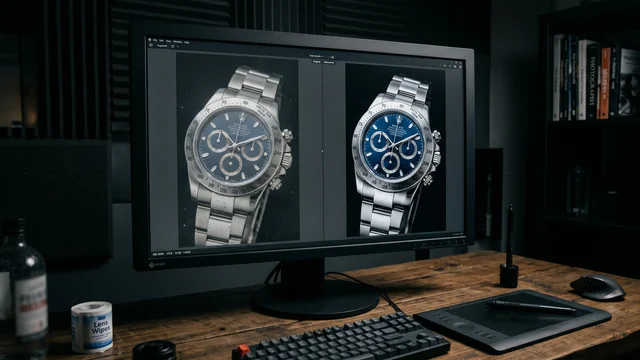
個人で使える写真レタッチ・修正サービス7社の料金・納期・対応範囲を比較。1枚から依頼できるサービスを中心にまとめています。
レタッチと加工の違い、基本的なレタッチの種類（明るさ補正、色味調整、肌補正、不要物除去など）を初心者向けに解説。
Snapseed、Lightroom Mobile、VSCO、Canva、PhotoDirectorの5つを用途別に比較。どのアプリをどう使い分けるか整理しました。
SNSで話題の「AIデータ収集」副業を調査。Outlier AI・Appen・Remotasksなど日本から使える6サービスの報酬・始め方・将来性を比較。
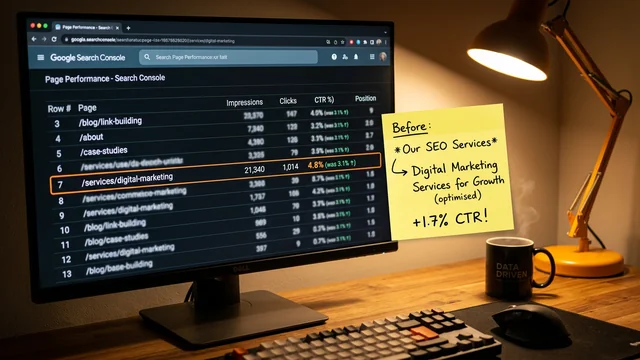
8位表示でCTR 0.23%だった記事のタイトル変更とその効果を記録した体験記。
表示回数・クリック数・CTR・掲載順位の意味と読み方、sitemap送信、URL検査の手順をまとめた記録。
「URLがGoogleに登録されていません」への対処・サイトマップ送信・インデックス登録リクエストの手順をまとめた記録。
FAQ JSON-LDの書き方・設置手順・Search Consoleでのリッチリザルト確認方法をまとめた備忘録。
タイトル最適化・meta description・sitemap送信・FAQ構造化データ・内部リンクなど、最初にやったSEO対策5つの備忘録。
個人ブログでAmazon アソシエイトに登録した手順・180日ルール・リンクの貼り方をまとめた記録。
99,800円のMacBook Neo登場でMacの選び方が変わった。Neo・Air・Proの違いと用途別の選び方をまとめました。
スクール費用・求人データ・AIの影響を比較。動画編集は案件豊富で月5〜10万円を目指しやすく、レタッチは専門性を高めてキャリアにつなげやすい。
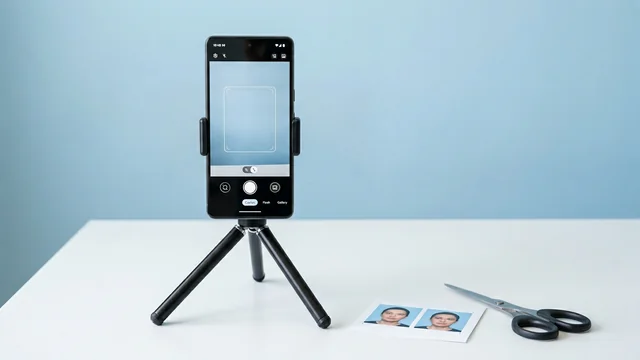
証明写真アプリの比較、用途別サイズ一覧、コンビニ印刷の手順をまとめています。
Amazon（白背景必須）、楽天（テキスト20%ルール）、メルカリの画像ガイドラインを比較表で整理。
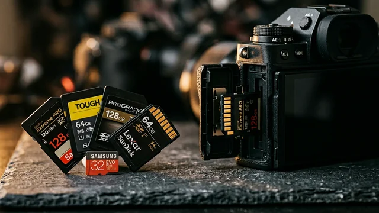
UHS-I/II、V30/V60/V90の違い、容量の目安、信頼できるメーカーなどSDカード選びの基本をまとめました。
ミラーレス一眼の基礎知識と、初心者向けの予算別おすすめ機種。センサーサイズ、レンズキット、中古の選び方も。
iPhone、Pixel、Galaxy、Xperiaなどカメラ性能が高いスマホを比較。EC商品撮影にも使えるか検証しています。
写真副業を始めるための条件や現実的なハードルを調べた備忘録。
就業規則と副業の関係、確認すべきポイントをまとめた備忘録。
就活写真のレタッチ範囲と注意点を調べた備忘録。
SNSの加工トラブル事例とマナーの実態をまとめた備忘録。
インスタフィルターとLightroomの機能差を初心者向けに整理した備忘録。
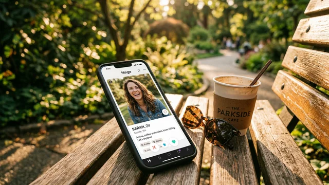
マッチングアプリの写真で重要な撮影場所・構図・加工の考え方をまとめた備忘録。
ポートレートモードの仕組みと上手な使い方を調べた備忘録。
スナップ写真の魅力とインスタ映えとの付き合い方をまとめた備忘録。
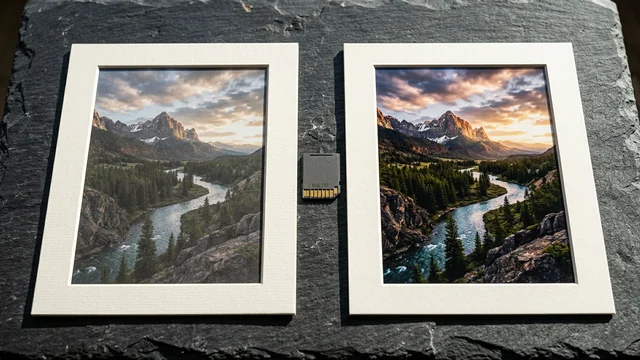
RAWとJPEGの違い、RAW現像のメリット・デメリット、初心者向けの無料/有料現像ソフトを調べた備忘録。